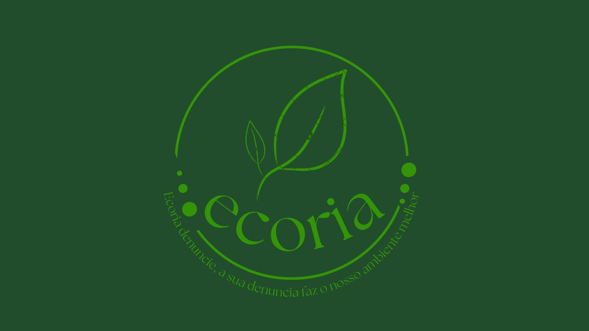

Sobre nós
-
Nosso objetivo
Nosso objetivo com esse site era.
Que o projeto permitisse que a população registre ocorrências como descarte irregular de lixo, desmatamento, queimadas, poluição e maus-tratos aos animais, contribuindo para a preservação do meio ambiente e para uma cidade mais sustentável. Além disso, as denúncias podem ser acompanhadas por meio de diferentes status, promovendo maior transparência e conscientização da comunidade..
-
O que prezamos por
O que prezamos por
garantindo que todas as informações fornecidas sejam tratadas com segurança e responsabilidade. Também valorizamos a transparência em cada etapa do processo de denúncia, permitindo que o usuário acompanhe o andamento das ocorrências e tenha clareza sobre o status de cada registro. Nosso compromisso é oferecer uma plataforma confiável, ética e acessível, incentivando a participação da comunidade na preservação do meio ambiente.
-
Autores
Os autores são
um grupo de estudantes dedicados às causas ambientais e civis, unidos pelo propósito de desenvolver soluções que aproximem a população da preservação ambiental. Por meio da tecnologia, buscamos facilitar o registro de denúncias, promover a conscientização da sociedade e incentivar atitudes que contribuam para cidades mais limpas, sustentáveis e responsáveis.